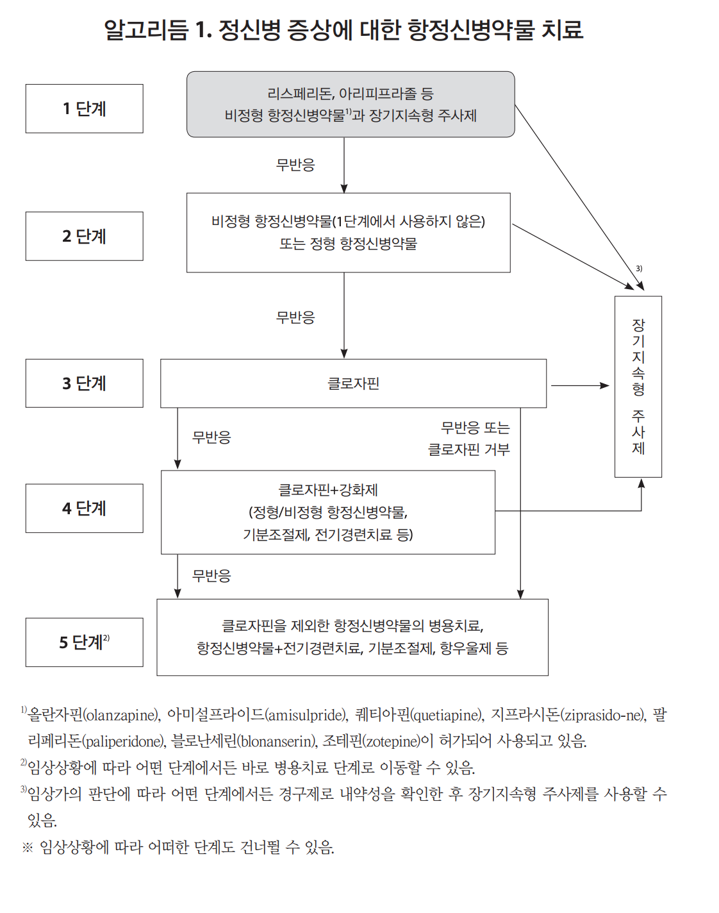

28 메타 분석과 임상진료지침
Meta analysis and treatment guidelines
28.1 메타 분석과 체계적 문헌 고찰
28.1.1 개요
2000년대 후반 이후 이전의 CATIE, CUtLASS, SOHO 등과 같은 대규모 연구가 매우 드물어진 대신, 그 빈자리를 채운 것은 다양한 체계적 문헌 고찰(systematic review) 및 메타 분석 연구(meta analysis)였다. 근거중심의학에서 채용되는 근거 중에서 가장 중심적인 위치는 무엇보다 무작위 배정 임상 시험이 자리하고 있으나, 근거 수준(level of evidence)의 피라미드에서 그 보다 더 상위 위치를 차지하고 있는 것은 체계적 문헌고찰과 메타 분석이다.(27.1.1 장) 아무래도 개개 연구는 표본 수가 적을 뿐더러, 연구자의 고유한 학문적 경향이나 편견이 개입된 나머지 그 자료 혼자만으로는 임상에 적용하는데 적절하지 못하다. 그러나 유사한 결과가 독립된 연구에서 반복 확인된다면 훨씬 강력한 타당성을 지니게 된다. 게다가 매해 수십만편씩 쏟아지는 새로운 연구 결과들을 일일이 살펴볼만한 여유나 능력을 갖춘 연구자나 의사는 극히 드물 것이다. 이런 현실에서 주의깊게 작성된 체계적 문헌 고찰은 쉽게 접하기 힘든 연구 결과를 소개함은 물론, 각 연구들의 쟁점과 논란을 요약하고, 연구들의 중요성을 평가하며, 그로부터 합리적 의심하에 받아들일 수 있는 타당한 결론들을 가려내 준다.[1]
메타 분석이 정당한 연구 방법론으로 자리잡은 1970년대 중반 이후 해마다 메타 연구의 비중은 증가되어 왔으며, 이제는 큰 학문적 파급력을 갖는 논문의 약 20%는 메타 분석 논문이다.[2,3] 체계적 문헌 고찰이란, 연구 결과들을 통합함에 있어 어느 한쪽으로의 편향을 막기 위해 미리 정해진 절차를 따라 행해지는 문헌 고찰이다. 체계적인 절차1의 예로는 고찰에 포함시킬 문헌을 검색하는 전략이라던지, 각 문헌에 대해 어떤 식으로 비중을 매길 것인지를 고찰을 진행하기 전에 미리 정해놓는 것이 등이 있다. 한편 메타 분석은 정해진 주제와 관련된 독립적인 연구 결과들을, 특정한 분석 방법론을 이용하여 결합하고 요약하는 것이다. 이는 단순히 원전 연구의 자료를 구하여 합산하는 것이 아니며, 통계학적으로 검증된 방법론을 거쳐 엄격한 체계 하에 결과를 통합한다. 따라서 단순히 표본 수가 늘어나는 것이라고 생각해선 곤란하며, 종합적 결과를 요약해내는 것과 동시에 그렇게 얻어진 결과에 잠재된 신뢰도나 편향성 여부까지 산출해낸다.
1 과거에는 문헌 고찰이라고 해도 저자의 개인적 견해에 의해 편향되는 일이 많았기 때문에, 문제점을 인식한 일부 연구자들이 모여 1999년 최초의 지침인 The Quality of Reporting of Meta-analyses (QUOROM)을 발표하였다.[4] 이 지침은 내용을 보완하여 2009년에 The Preferred Reporting Items for Systematic reviews and Meta-Analyses (PRISMA)로 개편되었다.[5] 현재 전세계의 학술지들은 모든 체계적 문헌 고찰과 메타 분석 논문의 저자들로 하여금 PRISMA 지침을 철저히 따르도록 규정하고 있다. 2020년에는 그 동안의 학문 동향과 연구 성과를 반영하여 PRISMA 2020 지침이 새로 발표되었다. [6]
메타 분석이 각광받고 있는 원인 중 하나는, 개별 연구들의 신뢰도가 자꾸 떨어진다는 우려이다. 연구자들이 행하는 개별 연구들은 엄밀히 말하여, 진실을 밝히고자 한다기 보다는, 자신의 가설을 주장하기 위해 행해진다. 따라서 원하는 결과를 얻기 위해 특이한 방법론을 동원하고, 의미있는 결과가 나올 때까지 새로운 분석방법을 동원하여 데이터를 파헤친다.2 작은 표본 수와 작은 효과 크기(effect size), 통상적이지 않은 실험 디자인, 미리 정해놓지 않은 분석방법을 사용했을 때, 한 연구에 다양한 분석이 포함되었을 때, 재정적 혹은 그 밖의 이해관계가 얽혀있을 때 더욱 더 연구의 신뢰도는 떨어지게 된다.[9] 따라서 선행 연구결과를 후속 연구자가 재현하기란 점점 더 어려워지고 있으며, 이러한 재현성의 위기(replication crisis)가 객관성을 최우선시 하는 과학 연구의 기반을 점점 잠식하고 있다.[10]
메타 분석은 이러한 개별 연구들의 한계를 극복하는 중요한 연구 방법이다. 연구 결과들 간의 차이를 감지하고, 일관되지 않은 결과 속에서 공통된 경향을 찾아낸다.[11] 더군다나 흥미로운 점은, 최근에 관심이 모아지고 있는 네트워크 메타 분석은 실제로는 서로 비교된 적이 없는 두 치료적 개입의 효과를 간접적으로 비교할 수 있도록 해준다는 것이다. 즉 치료법 A와 위약 간의 대조 연구가 있고, 치료법 B와 위약 간의 대조 연구가 있다면, 메타 분석을 통해 치료법 A와 B 간의 상호 우위를 판정할 수 있다.[12,13]
28.1.2 메타 분석의 한계
그러나 메타 분석이라고 해서 전혀 편향에서 자유로운 것은 아니다. 아무리 개별 연구들의 한계를 보완해준다고 해도, 원 자료의 질을 넘어설 수 없다. 다루려는 주제가 일반적이고 오랜동안 연구된 것이어서 관련 연구 자료가 풍부하다면, 좀더 정교한 분석결과를 얻을 수도 있고, 수준에 미달되는 연구는 배제시킬 수도 있다. 그러나 지엽적이고 최근에야 관심이 모아지고 있는 주제라 관련 연구가 많지 않다면, 질이 낮은 연구 결과도 포함시킬 수 밖에 없고 따라서 메타 분석의 결과 또한 강등된다.[2] 또한 논문 게재의 속성 상, 가설 입증에 실패했거나 원하는 결과가 얻어지지 않았던 결과는 아예 출판되지 않는다는 출판 편향3의 문제가 있다. 또한 기존 메타 분석에서 특정한 결과 쪽으로 결론이 날 것 같으면, 이후 후속 연구 역시 동일한 결론을 재확인하기 위해 행해지고, 이런 상황이 지속되면 새롭게 갱신된 메타 분석의 결과는 이전 결과를 강화하는데 지나지 않게 된다. 이러한 확증 편향(confirmation bias)은 메타 분석의 신뢰성을 떨어뜨리는 가장 중요한 요인 중 하나이다.[15]
3 출판 편향(publication bias): 당연하겠지만 학술지의 편집자들은 통계적으로 유의미한 결과를 도출한 연구를 그렇지 않은 연구보다 더 선호한다. 유의미한 결과를 얻지 못한 연구는 “실패한 연구”로 여겨지며, 따라서 출간될 가능성도 거의 없다. 이런 상황에서 출판된 연구를 원자료로 하여 메타 분석을 시행하면 실제효과가 과대 추정될 수 있다. 논문 개제가 거절되는 경우도 문제이지만, 연구자 스스로 유의미한 결과를 얻지 못하면 논문 자체를 쓰지 않고, 서랍 속에 데이터를 묵혀버리는 경우가 태반이다. 이를 “file-drawer problem”이라 한다.[14]
28.1.3 메타 분석의 방법론적 진화
28.1.3.1 임상시험 사전등록
메타 분석이 피하려해도 피할 수 없는 선택 편향 및 확증 편향의 문제, 그리고 아무리 정교한 방법론을 적용한다 하더라도 분석에 포함된 원 연구의 질과 수준을 넘어설 수 없다는 문제 등을 해결하기 위해 몇 가지 방법론이 제시되었다. 가장 중요한 움직임은 2000년대 중반부터 시작된 임상시험 사전등록(clinical registry) 제도이다.(48.1 장) 그 전까지만 해도 중요한 임상시험이 진행되었다 해도, 그 결과가 부정적인 경우 출판되지 않고 사장되는 경우가 많았으며, 더욱 심각한 것은 제약사의 이해득실과 관련하여 일부러 출판되지 않는 경우도 허다했다. 미국의 사전등록 사이트인 ClinicalTrials.gov는 이미 1997년부터 운영을 시작하였으나, 사전등록이 의무사항이 아닌 이상 유명무실한 상태로 유지되었다. 분위기가 반전된 것은 2004년이었다. 항우울제의 심각한 부작용을 은폐하려던 GlaxoSmithKline의 시도가 폭로되면서, 주요 의학저널이 편집자들은 사전에 등록되지 않은 임상시험 결과는 싣지 않겠다고 선언하였다.[16]
미국의 이러한 움직임은 전세계로 파급되었다. WHO는 2005년부터 International Clinical Trials Registry Platform라는 시스템을 운용하기 시작하였고, 유럽공동체는 EU Clinical Trials Register (EU-CTR)를 발족하였다. 2008년 개정된 6차 헬싱키 선언에서도 모든 임상시험은 첫번째 환자를 등록시키기 전에 일반에게 공개된 데이터베이스에 사전등록해야 한다고 못 박고 있다. 우리나라에서도 질병관리청에서 운영하는 임상연구정보서비스(Clinical Research Information Service)가 있어서 임상연구를 시작하기전에 등록하는 것을 권고하고 있다. 이러한 사전등록 제도는 연구의 수준과 윤리성을 높임은 물론, 그 진행상황이나 최종결과를 관심있는 학자 뿐 아니라 일반인들에게도 공개함으로써 투명성을 향상시킨다. 체계적 문헌고찰이나 메타 분석을 행하는 연구자 입장에서도 선택 편향으로부터 해방되어 조건에 맞는 모든 연구 결과를 포함할 수 있게 되었으며, 그 결과를 비교적 용이하게 열람할 수 있게 되었다. 임상연구 등록제도는 그 동안 양적으로 급성장하였으며, 수많은 긍정적인 변화를 가져왔으나, 여전히 개선되어야 할 부분이 많다. 실제 데이터베이스를 열람해보면 아직도 등록만 되어있을 뿐 사후관리가 제대로 되지 않아, 진행상황이나 결과가 따라붙지 않은 경우가 많으며, 데이터베이스에 등재된 결과와 정작 논문으로 출판된 결과가 상이한 경우도 있다. 또한 메타 분석을 하는 연구자들은 여전히 출판되지 못한 임상 시험의 자료를 포함시키기 꺼려한다.[17]
28.1.3.2 개별환자자료 메타 분석
메타 분석은 기본적으로 원 논문에서 제시된 결과들을 모아 종합하는 과정이다. 그런데 원 논문에서 제시된 결과 자체가 환자들의 데이터를 요약한 것이므로, 메타 분석 결과는 요약의 요약이라고 할 수 있다. 이 과정에서 중요한 정보가 상당 부분 소실되어 버린다. 또한 원 저자가 주목하지 않았던 비교나 가설, 하위집단에 대한 독립적인 분석들은 불가능하다. 이러한 한계를 극복하기 위해 개별환자자료 메타 분석(Individual patient data meta-analysis, IPDMA)이 거론되기 시작하였다.[18] 이는 임상 연구의 원자료를 저자의 동의 하에 얻어낸 다음, 이를 모두 종합하여 거대 표본을 만든 후 이를 재분석하는 것이다. 원자료 공개에 대한 윤리적 논란은 오랜동안 이어져왔다. 최근에는 공적인 연구비를 통해 이루어진 연구의 원자료는 공개되어야 한다는 쪽으로 의견이 모아지고 있지만, 기업이 후원한 연구의 원자료는 얻기 힘든 경우가 많다. 물론 임상 시험에 드는 노력과 비용이 점점 더 늘어나고 있는 추세에서, 원자료에 대한 독점권을 행사하고자 하는 연구자나 후원사를 무조건 비난할 수는 없을 것이다. 게다가 원자료가 공개되었을 때 환자의 프라이버시가 침해될 소지가 크다는 위험때문에 무조건 여과없는 공개가 옳다고 주장할 수만은 없다.[19] 그러나 자료를 얻어낼 수만 있다면, 각각의 개별 연구보다 훨씬 더 설득력 있는 결과를 얻어낼 수 있다는 점에서 많은 잠재력을 지닌 분석법이다.[20]
아무리 메타 분석의 방법론이 진화했다고 해도, 원래 연구의 흠을 보완할 수는 없다. 오히려 메타 연구에 대한 지나친 기대와 과대 평가가 더 문제가 될 지도 모른다. 방법론의 개선으로 말미암아 지나치게 많은 메타 분석 논문이 발표되고 있으며, 이중 상당수는 너무나 지엽적인 주제에 매달리거나 포함된 연구 수 자체가 적어 메타 논문의 선결조건에 미달되고 있다. 임상 시험 논문의 개수 대비 메타 분석 논문의 개수의 이상적인 비율이 정해진 것은 아니지만, 임상 시험보다 메타 분석의 개수가 더 많아지는 어이없는 사태가 되어선 안 될 것이다.[21]
28.1.4 항정신병 약물 효과에 대한 메타 분석의 결과
28.1.4.1 항정신병 약물의 기대 이하의 효과
항정신병 약물의 효과 및 부작용을 메타 분석 및 체계적인 문헌 고찰 방법으로 고집스럽게 추적해온 학자로 뮌헨 공과대학 정신건강의학과 소속인 Stefan Leucht와 동료 연구진을 들 수 있다. 이들은 비정형 항정신병 약물과 정형 약물의 비교[22], 비정형 약물들 간의 비교[23], 항정신병 약물 용량에 대한 비교[24], 단일 약물 요법과 다약제 투여의 비교[25], 급성기 효과[26], 재발 방지 효과[27], 치료 저항성 환자에서의 효과[28] , 대사성 부작용 위험 비교[29] 등 항정신병 약물 치료와 관련되어 생각할 수 있는 거의 모든 주제에 대해 수준 높은 메타 분석을 시행하였다.
2017년 이들 연구진은 “급성 조현병 환자에 대한 위약 대조 임상 시험 60년”이라는 다소 거창한 제목의 논문을 발표하였다.[30] 이 연구에 포함된 이중 맹검 위약 대조 연구는 모두 167개로 참여 대상자 수만 28,102명에 이르렀다. 엄격한 메타 분석을 통해서 이들이 내린 결론은 항정신병 약물의 전반적 효과의 표준화된 평균 차이(standardized mean difference)는 0.38 정도로 통계적으로 유의한 것은 분명하지만 기대만큼 크지 않다는 것이었다. PANSS 20% 이상 감소로 정의된 의미있는 반응을 보인 환자군은 51%로 반수가 넘었으나, 이 비율은 위약 대조군에서도 30%로 나타났다. PANSS 50% 이상 감소라는 관해의 정의에 해당되는 비율은 이보다 훨씬 적어서 각각 23%, 14%에 불과하였다. 물론 반응군, 관해군의 비율이 약물 투여군에서 약 두 배 가량 높지만, 여전히 절반 가량의 환자들은 약물에 최소한의 반응도 보이지 않았다. PANSS로 평가한 지표에서 양성 증상이 가장 치료 효과가 높았으며, 음성 증상과 일반 증상이 그 뒤를 따랐다. 전반적 PANSS 호전 정도는 약 9.6점이었다.
28.1.4.2 위약군에서의 반응률 증가
이 연구에서 보고된 흥미로운 사실은 지난 60년 동안 약물의 효과는 정형 약물 시절이나 비정형 약물 시절이나 거의 동일하게 유지되었지만, 위약-대조군에서의 반응률이 계속해서 높아졌다는 점이다.[31] 때문에 매 10년마다 약물군과 대조군의 효과 크기 차이는 0.08 씩 줄어들었다. 참여 대상자의 선정, 평가방법의 변화, 비약물 치료의 발전 등 여러가지 원인들을 고려해볼 수 있겠으나, 위약 군에서의 치료 성적이 매해 높아지는 현상은 잘 설명되기 어렵다. 예를 들어 1964년 미국 정신보건연구원(NIMH)에서 주도한 페노치아진 계열 항정신병 약물과 위약 대조군 간의 비교 임상 시험에서, 의미있는 호전을 보인 환자의 비율은 각각 61%와 22% 였다.[32] 혹자는 이 결과와 현대의 비정형 약물을 이용한 비교 임상 결과를 대조시키며, 비정형 약물의 효과를 깎아내리기도 한다. 그러나 이는 엄연히 위약 대조군의 반응률이 높아져서 그러는 것이지, 약물의 효과가 낮아져서 그러는 것은 아닌 것 같다.4
또 다른 결과는 항간의 편견과는 달리, 제약회사 주도로 이루어진 임상 연구가 오히려 효과 크기가 더 적었다는 것이다. 비정형 약물에 대해 의사들이 의구심을 품었던 원인 중 하나가, 임상 시험 결과에 다국적 제약사들의 영향력이 가해져 결과가 왜곡된 것 아니냐는 편견이었다. 그러나 제약사 주도 연구일 수록 표본 수가 크고, 방법론이 엄격하며, 참여 대상자가 이질적이었기 때문에 약물의 효능이 더 반감되어 나타난 것으로 보인다. 같은 맥락에서 연구자 주도의 소규모 연구들이 상당한 편향을 보이고 있었으며, 전반적 출판 편향도 매우 심한 편이었다.
28.1.4.3 약물간의 우수성/안정성 서열
한편 네트워크 메타 분석 방법론의 보편화로 말미암아, 수십가지 항정신병 약물의 상호 비교도 가능하게 되었다. 역시 Leucht 연구진에 의해 2013년에 발표된 논문[23]에서, 효과 크기가 큰 약물부터 나열하면 클로자핀, 아미설프라이드, 올란자핀, 리스페리돈의 순이었다. 부작용 면에 있어서는 약물들 간의 차이가 더욱 뚜렷하여, 중도 탈락률에 있어선 아미설프라이드가 가장 우수한 반면 할로페리돌이 가장 열등했으며, 추체외로 증후군에서는 클로자핀과 할로페리돌, 진정작용에 있어서는 아미설프라이드와 클로자핀이 각각 가장 우수 - 가장 열등한 약물로 꼽혔다. 이러한 분석이 분명하게 해준 것은 증상 경감이라는 효능 면에서는 각 약물 간의 차이는 물론 정형 약물과 비정형 약물의 차이도 그리 뚜렷하지 않지만, 부작용 면에서는 약물에 따른 차이가 상당하다는 것이다. 따라서 저자들은 정형-비정형의 구분 보다는, 개개 약물의 효능-부작용 특성을 정확히 파악하는 것이 훨씬 중요하다고 강조하고 있다.
동일 연구진은 위 논문의 후속 연구로, 보다 많은 종류의 항정신병 약물을 비교한 결과를 2019년에 발표하였다. 이 연구에는 좀더 다양한 종류의 정형 항정신병 약물이 포함되었을 뿐 아니라 가장 최근에 임상에 도입된 브렉스피프라졸과 카리프라진의 자료가 포함되었다. 얻어진 결과는 2013년의 결과와 근본적으로 다르지 않았다. 치료 효과에서 가장 우수한 약물은 아미설프라이드, 클로자핀, 조테핀, 올란자핀, 리스페리돈 등이었다. 비교적 최근에 도입된 일로페리돈, 루라시돈, 카리프라진, 브렉스피프라졸 등은 효과 면에서 기존 비정형 약물에 비해 별반 개선점을 보이지 못했다. 특히 카리프라진과 브렉스피프라졸은 음성 증상에 대해 차별화된 효능을 나타낼 것으로 기대를 모았으나, 얻어진 결과를 보면 클로자핀, 조테핀, 아미설프라이드 등에 미치지 못하였다.[26]
Leucht와 그가 이끄는 연구진이 발표하는 연구들이 워낙 규모가 크고, 포괄적이기 때문에 이와 비교하면 다른 메타 분석들은 빛을 잃곤 한다. 그러나 유사한 주제를 다룬 다른 메타 분석 결과에서도 클로자핀, 올란자핀, 리스페리돈, 아미설프라이드의 상대적 우수성은 거듭 확인된다.[28,36,37] 한가지 염두에 둘 것은 다른 어떤 약보다도 올란자핀, 리스페리돈, 퀘타아핀에 대한 임상 시험 데이터가 풍부하며, 도입된 지 얼마 되지 않은 약물은 그만큼 임상 시험 자료가 부족하다. 한편 클로자핀은 연구 건수는 많으나, 워낙 치료 저항성 환자에게만 사용되기 때문인지 참여 환자수는 많지 않다.[28] 그럼에도 불구하고 효능 면에서 클로자핀의 우수성은 확연히 드러난다. 이와는 대조적으로 퀘티아핀, 아리프피라졸, 지프라시돈은 임상 자료가 풍부함에도 불구하고, 타 약물에 비해 상대적으로 저조한 평가를 받고 있다. 소위 3세대 약물로 불리는 신약들은 데이터가 부족할 뿐더러, 현대로 올 수록 위약 대조군의 반응률이 높아지면서 표준화된 평균 차이가 줄어들고 있기 때문에 좀더 박한 평가를 받고 있는 것 같다.
반복된 메타 분석을 통해 점점 더 분명해지는 것은, 다양한 약물이 있지만 효능 면에서는 이들 간에 별 차이가 나지 않는다는 점이다. 물론 위에 나열한 것처럼 일대일 비교나, 네트워크 메타 분석 등을 통해 우열이 매겨지고 있다 해도 그 차이는 수치상으로도 미미할 뿐더러, 실제 임상에서 그 차이를 체감하기도 쉽지 않다. 대부분의 약물이 도파민 수용체 차단이라는 기본적 메카니즘을 공유하고 있기 때문에 그렇다고 쳐도, 대부분의 약물이 서로 비등한 효과를 보인다는 것은 조현병의 약물 치료에 있어 새로운 돌파구를 찾지 못하고 있다는 반증이 되기도 한다.
많은 의사들은 평균적으로는 약물 간에 차이가 드러나지 않는다 해도, 특정한 약물에 잘 듣는 환자군이 있으리라 예상한다. 유전적 차이, 혹은 질병 단계의 차이 등에 의해 약물 반응도 차이가 날 것이며, 이를 미리 예측할 수 있으면 정밀의학의 이상을 달성하는데 한발 다가갈 수 있을 것이라고 기대한다. 그러나 이에 대한 반론도 없지 않다. 만약 환자 개개인마다 임상 시험에 사용된 약물에 대한 반응 정도가 다르다면, 위약 대조군에 비해 약물 투여군에서 이러한 호전 정도의 변이 폭이 더 커야 할 것이다. 그러나 이러한 변이 폭의 비(coefficient of variation ratio)를 역시 메타 분석으로 분석한 결과 오히려 약물 투여 군에서 변이의 폭이 줄어드는 것으로 나타났다. 즉 비약물 치료에 대한 개개 환자의 반응 정도 차이가 약물 치료에 대한 차이보다 컸다는 의미이다.[38] 게다가 대부분의 연구에서 약물 투여군의 반응 정도 분포는 단봉 분포(unimodal distribution)였지, 이봉 분포(bimodal distribution)가 아니었다. 이는 특정 약물에 대한 비반응군이 반응군과 비교하여 질적으로 다르지 않음을 시사하는 소견이며, 특정 약물에만 잘 반응하는 아형이 존재하지 않는다는 간접적인 증거이기도 하다.
동일한 맥락에서, 한 가지 약물에 반응이 미진하다고 해서 중간에 약을 교체하는 것은 별다른 차이를 가져오지 않는다는 분석도 있다.[39] 유럽에서 행해진 OPTiMiSE 시험에서는 아미설프라이드를 4주 치료 후 반응이 만족스럽지 않은 군을 무작위로 나누어 일부는 다른 항정신병 약물로 바꾸고, 나머지는 아미설프라이드를 그대로 투여하여 6주 후 재평가하였다. 그 결과 약물을 교체한 군이 더 나은 효과를 보인다는 증거는 찾을 수 없었다. 따지고 보면 약물 간의 효과 차이 중 일부는 임상 시험에 사용된 약물 용량이 최적화되지 않았기 때문이기도 하다. 섬세하게 약물 등가 용량을 결정하고 이에 기반하여 비교하면 약물 간의 차이는 더더욱 줄어든다. 물론 이렇게 데이터 통합과 모델링을 거쳐 얻어진 일반적 결과를 개개 환자에게 예외없이 적용할 수야 없겠지만, 적어도 메타 분석을 통해 얻은 증거에 따르면 단순한 효과부족을 이유로 약물을 교체하거나 통상적이지 않은 고용량을 사용하는 것은 기대한 결과를 가져오지 못한다.[24]
28.1.4.4 항정신병 약물 병용 요법의 효과
만약 약물 교체가 그다지 효과적이지 않다면, 고려할 수 있는 차선책으로 두 개 이상의 항정신병 약물을 병용하는 것, 비 항정신병 약물의 증강 요법, 마지막으로 클로자핀으로의 교체를 고려할 수 있을 것이다. 이러한 전략의 효과에 대해서는 소규모 임상시험으로는 절대로 결론을 내릴 수 없을 것이다.
Correll 등[40]은 항정신병 약물에 하나 이상의 병용 약물(항정신병 약물 혹은 기타 약물)을 투여했을 때와 기존의 항정신병 약물을 단독으로 투여했을 때를 비교한 연구들에 대한 메타 분석 결과들을 수집하였다. 말하자면 이 연구는 메타-메타 분석에 해당한다. 수집된 메타 분석은 모두 29개였으며, 여기에 포함된 병용 투여 전략의 개수는 42개 였다. 개개 전략에 대하여 최소 1개, 최대 27개의 원 임상 시험 자료가 포함되어 있었다. 이들 전략 중 약 1/3인 14개의 전략이 메타 분석 상 대조군에 비해 유의하게 우수한 것으로 나타났다. 이 연구는 메타 분석의 질과 분석에 포함된 원래 임상 시험의 질 사이의 미묘한 갈등을 드러내어준다. 29개의 메타 분석은 모두 엄격한 방법론이 충실히 적용된 연구들이었으나, 원래 임상 시험의 수준은 천차만별이었다. 원래 임상 시험의 질과 메타 분석에서 얻어진 효과 크기 사이에 음의 상관관계가 보여졌기 때문에 아무리 메타 분석을 엄격히 했다 하더라도 얻어진 결과들을 곧이곧대로 믿기는 어려웠다. 원자료의 조합, 그리고 조합된 자료의 이차적 조합. 이렇게 한단계씩 상승하면서 원 자료의 부족한 부분을 메꾸고 좀더 객관적인 정보만을 추려낼 수 있다면 좋겠으나, 현실적으로는 원자료의 한계를 보완할 수 있는 방법론은 정립되어 있지 못하다.
한편 임상에서 구사할 수 있는 약물의 조합은 너무나 많고, 이중 극히 일부만이 임상 시험을 거치게 되며, 또 메타 분석을 할 수 있을 정도로 반복해서 연구가 이루어지는 조합은 그 중에서도 극소수일 뿐이다. 이는 연구자와 의사, 그리고 이해관계가 얽혀있는 기업이나 정책결정자 들의 관심의 향방에 의해 특정 치료법의 운명이 결정난다는 것을 잘 보여준다.
28.1.4.5 안전성에 대한 메타 분석 결과
많은 항정신병 약물이 효능 면에서는 뚜렷한 차이를 보이지 않았지만, 부작용 측면에서는 각기 나름대로의 독특한 특색을 보인다. 따라서 부작용 측면에서의 차이는 어떤 약이 우수하고, 어떤 약이 열등하다고 해석하기 보다는 서로 이질적이라고 이해하는 편이 나을 것이다.
Leucht 연구진의 2019년 메타 분석 결과[26]에 따르면, 체중 증가면에서는 조테핀, 올란자핀, 서틴돌 등이 가장 그 정도가 심했다. 지프라시돈은 오히려 체중이 감소했으며, 그 뒤를 루라시돈, 아리피프라졸이 따랐다. 항파킨슨 약물 사용 정도에서는 클로자핀, 서틴돌, 올란자핀, 퀘티아핀이 가장 사용 빈도가 적었고, 피모자이드, 할로페리돌 등이 가장 높았다. 진정작용이 가장 심한 약물은 클로자핀, 조테핀, 설프라이드 등이었고, 가장 약한 약물은 피모자이드, 카리프라진, 팔리페리돈 등이었다.
약물을 상호 비교한 것은 아니지만, 항정신병 약물을 사용했을 때 전반적으로 신체적 부작용의 비율 및 사망률이 높아지는 지에 대해 연구한 메타 분석 자료가 있다. 항정신병 약물을 투여한 40,000명이 넘는 환자 중에서 약물 투여 초기에 심각한 신체적 질환을 앓게된 환자의 비율은 1.6 ~ 2.0% 정도였다. 그러나 위약 대조군에서도 이 비율이 1.4 ~ 1.7% 정도로 나타나 오즈비는 1.24 (유의수준 1.08~1.42)로 겨우 통계적 유의성을 띌 정도였다. 짧게는 6주 길게는 13주에 이르는 임상 시험 기간 중에 사망한 환자의 비율은 약물군과 위약 대조군이 각각 0.4%와 0.3%로 두 군간의 차이는 보이지 않았다. 그러나 신체적 부작용 및 사망률 모두에서, 치매를 앓고 있는 노인인 경우 약물군에서 비율이 상승되는 경향을 보여, 이러한 특수 환자군에 투약할 때는 많은 주의를 기울여야 함을 시사하였다.
28.2 임상진료지침과 알고리즘
28.2.1 의의와 한계
중거중심의학의 발전이 가져올 논리적 귀결은 임상진료지침(clinical practice guideline, CPG)과 치료 알고리즘(treatment algorithm)의 정립일 것이다. 질병분류학적 모델에 집착해있는 현대의학은 정확한 진단과 그에 해당하는 효과적 치료라는 두가지 원칙에 매달려있다. 여기에 천문학적 의료비 상승과 부적절한 의료 행위에 대한 법적 공방이 가열되면서, 점점 더 표준 치료(standard of care)라는 개념이 강조되었다.(27.1.1 장) 마치 특정한 환자 상태에 대해서 정확한 진단은 하나만 존재하며, 해당 진단에 대한 가장 효율적인(경제적으로도 치료 효과면에서도) 치료법도 하나만 존재한다는 식의 인식이 강해졌다. 이러한 압력은 의사들 내부에서보다는, 의료비 상승을 최대한 억제하려는 정책결정자들, 그리고 의료인의 잘못을 엄중히 가려내고자 하는 법조인들로부터 가해져 왔다. 애초에 치료지침이나 알고리즘이란 글자 그대로 진료 행위에 참조할 수 있는 지침을 제공하는 데 지나지 않지만, 정책결정자들은 오히려 이 지침에서 벗어나면 부적절한 의료행위로 단죄하곤 한다.5 우리나라 의료 보험 제도가 점차 행위별 수가제에서 포괄 수가제로 넘어가는 것도 이러한 맥락에서 이해할 수 있다. 보험공단은 표준 치료라는 명목하에 진단별 진료비를 고정시켜 놓고, 이 이상 진료하는 것을 사실상 제한하고 있다. 의료인들이 스스로 자성의 목소리를 통해 만들어놓은 기준이나 지침이 이런 식으로 역이용 될 수 있음을 잊지 말아야 할 것이다.
5 임상진료지침(clinical practice guideline)과 표준 치료(standard of care)는 유사하지만 조금 다른 개념이다. 표준 치료란 특정한 임상적 상황에서 진단에 도달하기 위해, 혹은 진단이 확실해졌다면 이를 치료하기 위해 의사라면 모름지기 취해야 하는 일련의 의학적 절차를 말한다. 이에 비해 임상진료지침이란 증거기반의학의 기치 하에 가장 합리적이고 효과적인 이상적인 치료절차를 제시하여, 많은 의사들이 이를 따라주길 희망하는 것이다. 표준 치료는 의료분쟁이 벌어졌을때, 의사의 과실을 판정하는 기준이 되기 때문에 반드시 숙지해야 한다. 문제는 일부 보험관련자, 정책입안자, 법조인이 임상진료지침을 표준 치료와 동일시한다는 것이다.[41,42]
혹자는 경험많은 의사에게는 불필요하지만, 수련을 받고 있는 학생이나 전공의, 혹은 비전문 일반의에게는 알고리즘이 이상적이라는 견해를 주장한다. 그러나 알고리즘을 통해 교육하는 것은 몇 가지 근본적 문제를 수반한다. 위에서 언급했듯이 알고리즘을 통해 생각하는 방식은, 정신과적 문제에 대해 어딘가에는 “정답이 있다”는 것을 전제로 한다. 알고리즘이란 불확실한 상황에서 일련의 절차를 거쳐 점차 확실한 상황으로 나아가는 것이다. 그러나 정신과 의사가 다루는 문제는 많은 경우 파헤치면 파헤칠수록 점점 더 불확실한 방향으로 나가는 경우가 많다. 진단이 과연 조현병이 맞을까 하는 문제를 제쳐놓는다 하더라도, 불확실성은 줄어들지 않는다. 환자가 호소하는 어려움, 삶의 질을 침해하는 주된 요인, 가족들이 고통받는 원인이 과연 조현병의 증상인지조차 확실하지 않다. 알고리즘 상의 논리라면 애초에 조현병을 치료하면 이 모든 어려움들이 사라져야 하지만, 현실은 그렇지 못하다. 오히려 치료과정에서 생긴 부작용이나, 치료를 둘러싼 갈등 때문에 더 삶의 질이 나빠질 수도 있다. 완치라는 개념이 드문 정신과 질환에서, 정신과 치료란 끊임없는 문제해결의 연속일 뿐, 질병을 근본적으로 치료하겠다는 목표는 비현실적으로 비춰진다. 이런 상황에서 진단에 맞춰 알고리즘을 따라 적절한 약물을 투여하고, 치료 목표를 달성했다고 안도하는 것은 의사의 역할을 제대로 인식하지 못하고 있는 것인지도 모른다.
한편 정신과 진료에서 판단보류라는 것은 매우 중요하다. 정신과 의사는 끊임없이 다양한 가능성과 대안적 설명들을 염두에 두고 있어야 한다. 환자가 나타내는 임상상은 경과에 따라, 주변 상황에 따라 시시각각 달라진다. 더군다나 진단체계라는 것 자체가 이론의 여지가 없는 일관된 지식체계가 아니라, 필요에 따라 임시방편으로 짜깁기워진 엉성한 그물망에 지나지 않는다는 것을 알게 된다면 더더욱 판단보류가 중요해진다. 현재로서는 조현병을 의문의 여지없는 뇌질환으로 여기고 있지만, 정신과 환자를 이해하는 패러다임은 생물학적 이해뿐만이 아니다. 그때그때 필요에 따라 다양한 패러다임과 프레임을 통해 환자를 이해하고, 유동적인 치료 방안을 모색할 수 있어야 한다.
이에 비해 알고리즘이란 판단보류를 피해가는 대표적 방법이라 할 수 있다. 알고리즘은 원래 인간의 복잡한 판단과정을 최대한 단순화시켜, 기계가 대신할 수 있을 정도로 표준화시킨 것이다. 앞선 단계의 불확실성과 애매모호함이 이후 단계의 결정에도 영향을 미치는 인간의 사고 방식과는 달리, 알고리즘은 중간단계에서 맞닥뜨리는 불확실성에 대해 일단 결정을 하면, 군더더기 정보들은 모두 버려가며 점점 더 가능성을 좁혀가는 방식이다. 따라서 알고리즘을 사용하면 마치 보다 정확한 확실성을 얻을 수 있다는 착각을 불러일으키지만, 이는 그야말로 심리적 착각일 뿐으로 정보의 선택과 여과 과정에서 느껴지는 홀가분함일 뿐이다.
물론 임상진료지침이나이나 치료 알고리즘을 제작하는 입장에서는, 이들이 결코 절대적인 것이 아니며, 인간의 판단을 대체할 수 없고, 오로지 보조적인 자료일 뿐이라고 항변하고 있다. 그러나 특히 수련중의 학생이나 비전공 일반인에게는, 마치 개개인의 편견을 배제할 수 있는 이상적인 접근법이라고 잘못 비춰질 수 있다. 이러한 오해는 지침 제작과정에 대한 이해 부족 때문에도 발생할 수 있다. 아무리 광범위한 문제에 대해 임상 시험이 행해지고, 치밀한 분석가들에 의해 그 자료가 종합된다고 하더라도 , 임상에서 접하는 모든 상황이나 궁금증에 대해 신빙성있는 증거를 확보하기는 어렵다. 기껏해야 사례 보고나 소규모 개방 연구 정도로 만족해야할 경우도 있으며, 이나마도 없는 경우가 비일비재하다. 따라서 전통적으로 지침 제작은 확립된 증거뿐만 아니라, 전문가들의 공통적 견해를 기초로 시작되었다. 이를 소위 전문가 집단의 합의(expert consensus)라고 하는데, 보통 그 방면에 풍부한 임상 경험을 갖고 있다고 여겨지는 전문가들에게 설문을 행하여, 가장 많은 비율로 지지를 받는 치료법을 우선적인 치료로 정하는 방식이다. 이런 식으로 지침이 마련되면, 이를 엄격히 준수하여 치료한 환자군과, 의사의 개인적 판단으로 치료한 환자군을 비교하여 치료결과의 우수성을 증명한다. 그러나 이런 과정은 좀더 나은 치료법을 찾아내는 것도 아니요, 경험적 치료법의 비합리성을 증명하는 것도 아닌, 그저 학계에서 실권을 잡고 있는 전문가들의 합의를 재확인하는데 지나지 않을 위험이 있다. 해당 치료법에 대한 문헌이 많다는 것 또한, 그만큼 편견이 굳어져 있다는 것을 의미할 수도 있다. 게다가 임상진료지침을 작성할 때 여러 이익단체들의 입김이나 요구사항을 완전히 배제하기 어렵다. 국가기관이나 영향력있는 학회가 지침서를 만드는 경우, 이익단체들의 입장이나 반발을 미리 고려하여 치료법 사이의 우열을 배제하고 단순히 나열하는 경우가 있으며, 역으로 지침서에서 후순위로 밀려났다고 해서 맹렬한 비판을 받기도 한다.[43]
28.2.2 중요성
그럼에도 불구하고 임상진료지침과 치료 알고리즘은 점점 더 다양해지고 정교해지고 있다. 이들에 대한 신뢰와 필요성에 대한 인식 역시 해가 갈수록 높아지고 있다. 이를 통해 개개 의사들의 이론적 치우침이나 무의미한 치료에 대한 맹신을 보완할 수 있으며, 부단한 의학 연구를 통해 얻어진 값진 성과들을 비교적 신속하고, 누구나 알아보기 쉬운 형태로 보급한다는 중요한 의미가 있다. 의학의 발전속도는 너무나 빠르기 때문에 개개 의사가 일일이 이를 따라잡기는 곤란하다. 더군다나 의미있는 결과와 그렇지 않은 결과를 구분하고, 전체 맥락에서 개별 결과가 차지하는 의의를 파악하는 것 역시 매우 힘들다. 지침서는 이를 도와줄 수 있는 유용한 도구이다. 지침서에만 의지하여 치료한다는 것은 바람직한 방향이 아닐 지 모르지만, 자신의 치료 행태가 현행 지침에 부합하는지를 점검하는 것은 모든 의사들의 필수과제가 아닐까 한다.
28.2.3 주요 조현병 임상진료지침
28.2.3.1 Expert consensus guideline series
근거중심의학의 원칙 하에 지침서가 만들어지기 전에도 이미 지침서는 있어왔다. 1990년 미국 의학 연구소 (Institute of Medicine, IOM)는 임상진료지침을 “특정한 임상 장면에서, 의료 제공자와 환자·보호자에게 적절한 의료를 위한 의사 결정을 지원하기 위해 계통적으로 작성된 문서”라고 정의하고 지침서 작성을 위한 기준을 제시했다.[44] 그 이후로 전문가 집단의 합의를 종합한 지침서가 제작되기 시작하였다. 그 대표적인 예로 1990년대 말부터 발간되기 시작한 expert consensus guideline series를 들 수 있다. 이 가이드라인은 다양한 질환, 다양한 임상 상황에 대하여 순차적으로 발간되었는데, 그중 일부를 이루는 조현병 치료에 대한 가이드라인은 1996년에 첫판이 발표되었고, 1999년에 개정 되었다.[45]
지침서의 개발을 위해 약물 치료와 관련하여 57명 그리고 심리사회적 치료와 관련해서 62명의 전문가들로 부터 설문 응답을 받았다. 전문가 선정은 학문적인 업적, DSM-Ⅳ작업 참여 경력, 과거 임상 지침서 개발 경험 등을 참조하였다. 여기에는 의료진 뿐 아니라 공공기관이나 정부기관의 의견을 대표하는 인물도 포함되었다. 그래서인지 약물 치료뿐만 아니라, 심리사회적 치료, 진단 및 감별진단 뿐 아니라 환자와 가족을 위한 내용도 포함하고 있다. 이 지침서의 특징은 비정형 항정신병 약물이 처음 도입되던 당시의 낙관주의를 반영하고 있다는 것이다. 증상이나 부작용 여부에 따라 항우울제, 항불안제, 항콜린제를 병용하는 것보다는 비정형 약물의 단독 사용을 우선적으로 추천하고 있다. 또한 항정신병 약물의 최대 허용 용량도 많이 낮아져, 용량이 점점 낮아지는 최근의 추세를 반영하고 있다.
28.2.3.2 The schizophrenia patient outcomes research team (PORT)
조현병 환자의 치료 결과 연구 팀(PORT)6은 AHCPR7과 NIMH의 지원하에 1992년 구성되었다.[46] 전문가 합의 뿐 아니라, 기존까지 발표된 논문들을 체계적으로 검토하여 최대한 근거중심의학의 방법론 하에서 객관적인 증거가 최대한 반영되도록 애썼다. 첫 가이드라인은 1995년에 발표되었으며, 2009년 마지막으로 재개정되었을 때에는 CATIE 및 CUtLASS 임상 시험의 결과가 최대한 반영되었다.(27.2 장)[47] 다루는 영역에서는 expert consensus guideline series와 유사하지만, 객관적인 연구 자료가 반영되었다는 점에서 진일보하였다.
6 The schizophrenia patient outcomes research team (PORT)
7 Agency for health care policy and research (AHCPR)
28.2.3.3 Texas medication algorithm project (TMAP)
조현병에 대한 진료지침에 부쩍 관심이 높아진 것은 비정형 항정신병 약물의 도래와 연관이 깊다. 대학 연구팀을 중심으로 제작된 지침서들은 1990년대 말부터 2000년대 중반에 걸쳐 가장 활발하게 소개되었고, 이후에는 동력을 상실하여 개정도 뜸해지게 되었다. 이런 상황에서 지침서의 상업적 목적이 의심받기도 하였다.
미국 텍사스 주의 공적 정신의료의 향상을 목적으로 텍사스 정신보건국과 텍사스 대학이 공동으로 작성한 Texas medication algorithm project (TMAP)은 조현병 뿐 아니라 우울증, 양극성 장애, 주의력 결핍 과잉행동 장애에 대하여 일관되고 적절한 표준 약물치료를 제시하였다. 특히 이 프로젝트는 가이드라인을 준수한 치료결과와 그렇지 않은 결과를 비교하는 임상 시험을 진행하여 가이드라인의 현실적 유용성을 입증하기도 하였다.[48,49]
그러나 이 연구는 Robert Wood Johnson 기금으로부터 연구비를 제공받았는데, 이 기금은 얀센 사의 모회사인 Johnson & Johnson 사가 세운 기금이다. TMAP 제작에는 이외에도 많은 제약회사가 직접 연구비를 후원하였는데, 이후 임상진료지침 제작에 이익단체가 금전적으로 개입하는 것이 윤리적인지에 대한 논란을 불러일으켰다.[50] 이처럼 지침서의 작성과정은, 전문가의 선정에서부터 임상 증거의 취사 선택 등 너무나도 많은 자의적인 요소가 개입되어 있기 때문에 그 제작과정이 극도로 투명할 필요가 있다.
28.2.3.4 미국 정신의학회 지침서
이러한 자성과 시대적 요청에 힘입어 작성 과정부터 명료함과 투명성을 강조한 좀더 엄격한 지침서가 제작되는데, 그 대표적인 예가 2004년 발표된 미국 정신의학회(APA)가 제작하는 조현병 진료지침이다. 특히 APA 지침서는 모든 작성 과정에서 GRADE8 기준을 준수하며 제작되었다. GRADE 기준에 따르면, 지침서의 개개 항목은 예상되는 이득과 함께 잠재적인 위험을 함께 고려하며, 전자가 후자를 상회하는 것이 확실할 때에만 추천 치료로 선정된다. 또한 이러한 결론의 신뢰성을 수치로 제공함으로써 의사가 참조할 때 우선 순위를 매길 수 있게 하였다. 신뢰성을 산출할 때에는 그 기반이 된 임상 시험의 질, 서로 다른 인구집단에서의 균질성, 환자집단의 선호도 등을 종합적으로 고려하였다. 또한 예상되는 이득이 소요되는 비용을 만회할 수 있는지에 대한 고찰도 포함되었다.
APA 지침서는 2020년에 새로 개정되었다. 새로운 지침서는 정형 약물과 비정형 약물의 순위 매김은 의미없으며, 개개 약물은 정형/비정형이라는 범주를 떠나, 독특한 특성을 지닌 고유한 약물로 여겨져야 한다고 선언하고 있다. 특정 약물을 사용하여 급성기 치료에서 효과를 보았다면, 동일한 약물로 장기간 유지치료를 할 것을 강조하며, 장기지속형 주사제에 대한 권장도 포함하고 있다. 클로자핀의 비중이 높아져서, 치료 저항성을 보이거나, 타 약물을 사용해도 자살 혹은 공격적인 행동이 문제가 될 때 클로자핀을 사용할 것을 적극 권장하고 있다. 이전 판에 비해 변화된 것은 지연 운동이상증이 있을 때 소포 단가아민 수송체(vesicular monoamine transporter 2, VMAT2) 억제제를 사용하라는 권고이다. 지연 운동이상증에 VMAT2 억제제가 미국 식품의약청의 허가를 받은 것은 2017년으로, 아직 임상 경험이 많이 쌓여있지 않음에도 불구하고 지침서에 포함된 것은 매우 예외적이다.
28.2.3.5 NICE 지침서
이익단체의 후원때문에 지침서의 공정성이 퇴색한 탓인지, 공익성을 인정받는 학회나 국가가 제작한 지침서가 좀더 신뢰를 받고 있다. 앞서 소개한 APA 지침서 외에 현재 가장 영향력있는 가이드라인으로는 NICE 지침서가 있다.[52]
영국의 국가 보건의료 우수증진기관(NICE)9은 조현병 뿐만 아니라 300여개가 넘는 다양한 의학적 관심사에 대해 근거중심의학 원칙에 입각하여 가이드라인을 내놓고 있다. 이는 정신과 전문의 뿐만이 아니라, 간호사, 심리사, 환자, 케어 제공자 등 보다 광범위한 의료 종사자를 대상으로 한다. NICE 지침서는 다음 원칙에 근거하여 작성되었다.
9 National Institute for Health and Care Excellence (NICE)
- 객관적 증거의 중시: 임상적인 효과와 비용 대 효과의 쌍방의 관점에서, 최신의 의학적 증거에 근거하여 권장되는 치료 등을 제시한다.
- 폭넓은 전문가 집단의 참여: 임상 실천, 공중위생, 사회 복지 등의 전문가들로 구성된 독립된 위원회에 의해 작성된다.
- 국민의 참여: 모든 데이터베이스 작성 위원회는 적어도 2인의 비전문가(환자, 원조자, 서비스 이용자, 일반 시민 등)을 포함하여, 비전문가로부터 의견을 청취한다.
- 독립성, 적절한 의론과 투명성: 보건성 및 국가보건서비스(National Health Services, NHS)로부터 지침서 작성의 의뢰를 받은 후는, 어느 조직으로부터의 영향도 받지 않고, 중립적인 입장에서 작성한다. 개인, 단체를 묻지 않고 모든 국민의 의견을 기술하는 기술을 보증하여, 작성 과정의 투명성을 유지한다.
- 재검토: 모든 지침서는 정기적으로 재검토되어, 필요에 의하여 최신의 증거에 근거하여 개정된다.
- 사회적 가치관이나 공정성에 대한 배려: 사회적 가치관이 반영되도록 시민 평의회와 협력하여 일한다.
- 선진적인 방법론: 국제적으로 인증되어 있는 과학적 방법에 근거하고, 다양한 타입의 실천에 관한 효능이나 비용 대 효과를 검증한다.
국가가 주도하여 작성된 NICE 지침서가 내세우고 있는 가치를 살펴보면, 중립성, 투명성이 얼마나 중요하며, 단순히 의학적, 생물학적 증거만을 갖고 지침서가 결정되는 것이 아님을 알 수 있다. 지침서는 과학에 일방적으로 끌려가는 것이 아니며, 어떻게보면 질병과 그 치료를 둘러싼 국민 모두의 합의임을 엿볼 수 있다. 고통 받는 당사자인 환자를 중심으로, 의학적 치료를 담당하는 의사, 보조적 치료와 지지를 담당하는 전문가 집단, 비용을 제공하는 보험 당국, 정책을 결정하는 정부. 의료의 경제성이나 윤리적 문제를 탐구하는 학자 등이 모두 납득할 수 있는 치료법이 지침서에 포함되는 것이다. NICE 지침서 중 조현병과 관련된 부분은 2014년 마지막으로 개정된 성인에서의 치료 지침, 그리고 2013년 개정된 소아, 청소년에서의 치료 지침이 있다.
NICE 지침서는 영국에서 실제 진료행태에 큰 영향을 끼쳤다. 지침서의 개정은 언론에서 비중있게 다루어지며, 일반인의 관심도 높다. 모든 문서는 공개되어 있으며, 일반 사용자를 위한 평이한 문서도 공개된다. NICE 지침서는 약물보다 심리 요법과 지역사회 재활을 강조하고 있다. 또한 처방약을 결정할 때 환자의 선호도나 주도적 의사결정이 큰 비중을 차지한다. APA 지침서와 마찬가지로 비정형 항정신병약을 우선시하지 않으며, 두가지 이상의 항정신병 약물에 효과가 없다면 클로자핀 사용을 적극 권장하고 있다. 또한 다약제 병용 보다는 단일약제 치료를 권하여, 치료저항성을 보일 때나 약물 교체 때를 제외하고는 병용 요법을 권하지 않는다.
28.2.3.6 세계생물정신의학회 지침서
위에 소개한 지침서들이 각각 특정 국가의 의료 상황에 제한된 것이었다면, 국제 학회를 주축으로 하여 여러 나라의 학자들이 머리를 맞대어 제작한 것도 있다. 세계생물정신의학회(WFSBP)10는 알츠하이머 치매, 불안장애, 물질 남용, 성격장애, 양극성 장애, 우울증 등 다양한 질환에 대해 치료 지침서를 내놓고 있는데, 이중 조현병 지침서는 2005년에 처음 발표하되었으며, 급성기와 유지기 치료 지침서가 2012년과 2013년에 각각 개정되었다.[53,54,54] 특이한 점은 2015년에 우울 증상, 자살 우려, 물질 사용 장애, 임신, 수유 등의 특수 상황에서 조현병 약물치료 관리에 대한 지침서가 발표되었다는 것이다.[55] 이는 타 지침서와 차별되는 점이며, 임상에서 피해갈 수 없는 까다로운 상황을 다루고 있다.
10 The world federation of societies of biological psychiatry (WFSBP): 1974년 아르헨티나에서 창립된 유서깊은 국제학회로 주로 정신질환의 생물학적 이해와 치료에 관심을 두고 있다. 기존 국제학회들이 영미, 유럽에 지나치게 치중되어있는데 비해, 보다 광범위한 국가들의 목소리를 반영하고 있다.
WFSBP 지침서는 GRADE 작성법을 도입하지는 않았지만, 나름대로의 기준을 세워 지침서에 제시된 증거의 질을 명시하였다. 증거를 A (두 개 이상의 이중 맹검 임상 시험으로 부터 얻어진 증거) 부터 F (증거없음)까지 6개의 수준으로 나누고, 이에 기반하여 지침에 제시된 사항의 권장 정도를 5단계로 구분하였다. 이 지침서 역시 정형/비정형 약물을 구분하는 것은 큰 의미가 없고, 효과 면에서 두 범주의 약물의 차이가 난다는 증거도 없다고 못 받으면서도, 중도 탈락, 지연 운동이상증 위험, 삶의 질, 음성 증상 호전 등 치료에 핵심 요소에 있어 일부 비정형 약물이 우수하다고 덧붙이고 있다. 될 수 있으면 단일 약제 사용을 우선시하며, 심한 부작용이나 환자의 선호도로 인해 약물을 교체해야하는 경우가 아니라면, 적어도 동일 약물을 최소 2주, 최대 8주 사용한 후에 실패 여부를 결정할 것을 권한다.
28.2.3.7 하버드 대학의 정신약물학 알고리즘 프로젝트
위에서 본 바와 같이 해외에서 널리 사용되는 지침서를 보면, 그 내용이 서로 대동소이하다는 것을 엿볼 수 있다. 그럴수밖에 없는 것이, 지침서들이 근거 자료로 사용하고 있는 대규모 임상 시험이나 메타 분석 자료는 모두 동일하기 때문이다. 한편 2010년 이후 비정형 약물들의 특허가 풀리면서 복제약들이 쏟아졌고, 다국적 제약 회사들의 연구 동력이 사라지면서 더 이상 과거와 같은 대규모 임상 시험을 찾기 어려워졌다. 그렇다보니, 지침서를 개정할 새로운 임상 자료가 드물어졌고, 이 때문에 최근 10년 사이에는 별다른 개정이 이루어지지 않았다.
그렇지만 지난 10년간 아리피프라졸을 필두로 소위 3세대 약물들이 출현하는 등 소소한 변화들이 축적되었다. 조현병 치료의 방향도, 양성 증상 치료에 초점을 맞추고 나머지 증상은 심리사회적 지지와 재활로 보충한다는 고전적 전략에서 벗어나, 인지나 음성 증상 자체를 타겟으로 약물 치료를 꾀하는 쪽으로 바뀌고 있다. 이러한 점진적인 지식의 축적과 개념의 변화를 좀더 역동적이고 신속하게 알고리즘에 적용해야 한다는 목소리가 높아졌다. 지침서나 알고리즘의 절대적 수가 부족한 것은 아니지만, 오랜 세월에 걸쳐 꾸준히 수정, 보완되고 있는 알고리즘은 생각보다 많지 않다.
하버드 의과대학의 David Osser가 이끌고 있는 하버드 정신약물학 알고리즘 프로젝트11는 순수히 민간 연구팀에 의해 발행되고 있는 알고리즘이다. 제약회사의 연구비 지원을 전혀 받지 않았을 뿐더러, 국가 기관이나 학회의 지원도 받지 않았기 때문에 다양한 이익 단체의 복잡한 입장을 조율해야한다는 제약에서도 자유로왔다. 1996년에 우울증의 약물치료 알고리즘으로 부터 시작되었으니, 현재까지 4반세기에 걸쳐 꾸준히 운영, 유지되고 있는 셈이다. 조현병을 포함하여, 자폐증, 양극성 장애의 우울증, 사회불안장애 등을 포함하여 총 11가지 임상 진단에 대하여 알고리즘을 제시하고 있는데, 조현병에 대한 알고리즘은 1998년에 처음 발표되었다. 책자나 논문으로 발간되는 타 지침서/알고리즘에 비하여, 이 프로젝트는 애초부터 온라인 형식으로 공개되었기 때문에 필요에 따라 수시로 개정될 수 있었으며, 따라서 타 알고리즘에 비해 최신 연구결과들을 가장 먼저 반영한다.12 조현병 가이드라인의 특색이라고 한다면, 최초 선택 약물에 루라시돈이 포함되었다는 점과 동시에 올란자핀, 퀘티아핀, 클로자핀이 빠져있다는 점이다. 이는 세가지 약물의 대사 부작용에 대한 우려와, 퀘티아핀이 조현병 재발을 막는데 상대적으로 효과가 미미하다는 연구 결과를 반영한 것이다.[56] 클로자핀에 치료저항성을 보이는 환자에게 토피라메이트나 라모트리진 병용요법을 권한다던지, 병용 후에도 만족스럽지 못하거나 클로자핀을 사용할 수 없을 때는 기존 항정신병 약물에다가 메만틴, 오메가 3 지방산, 미르타자핀, 항염증제인 celecoxib 등의 병용 투여를 시도해보라고 명시한 것도 타 알고리즘에서는 찾아보기 어려운 특색이다.
11 The psychopharmacology algorithm project at the Harvard South Shore Program (PAPHSS)
12 본서의 저술 시점을 기준으로, 조현병 알고리즘은 2020년 9월에 마지막으로 개정되었다. 2020년에는 “Psychopharmacology Algorithms”이라는 단행본으로도 출간되었다.
28.2.4 우리나라의 현황
구미 각국에서 임상진료지침이 우후죽순처럼 등장하던 2000년대 초반 우리나라에서도 이러한 움직임에 동참해야 한다는 목소리가 높아졌다. 대한정신약물학회와 대한조현병학회는 주요 정신 질환의 약물치료에 대한 한국형 알고리즘 개발 계획13을 착수하였고, 독립적으로 운영되는 조현병팀과 양극성 장애팀을 투어 개발에 착수하였다.[57] 세계적으로 널리 알려진 치료 알고리즘이 있는데도 독자적으로 제작하려고 했던 것은, 우리나라 의학 현장의 독특한 사정을 반영할 수 있어야만 했기 때문이다.[58]
13 Korean Medication Algorithm Project for Major Psychiatric Disorders (KMAP)
우리나라는 전국민 의료보험 시스템에 의해 가능한 의료형태가 제한되고 있기 때문에, 사용할 수 있는 약물이 많지 않고, 진료 수가가 외국과 많은 차이가 있다는 점이 고려되어야 했다. 또한 해외에서 시행된 임상시험에는 아시아 인의 비중이 크기 않기 때문에, 한국인의 유전적 특성 때문에 나타나는 고유한 약물 반응이 서구인과 다를 가능성이 있다. 이 때문에 최대한 국내 연구 결과를 반영한 지침서가 필요하였으며, 암묵적으로는 현대적 진료관행을 반영한 지침서를 통해 보험공단에 압력을 가하고자하는 취지도 있었다.
역시 대한정신약물학회와 대한 조현병학회가 공동으로 펴낸 “2019년 한국형 조현병 약물치료 지침서”는 2006년 마지막 개정 이후 13년만에 이루어진 대대적 개정판이었다. 이는 1) 정신병 증상에 대한 항정신병약물 치료 알고리즘, 2) 동반증상에 대한 치료 알고리즘, 3) 항정신병약물 사용에 의한 부작용의 치료 알고리즘, 3가지 영역으로 구성되어 있다. 정신병 증상에 대한 항정신병 약물 알고리즘은 총 5단계의 단계로 구성되어, 환자에게 최초로 시도하게 되는 단계와 앞선 단계가 실패했을 때 시도하는 단계가 구분되었다. NICE, APA 지침서와는 달리 제 1단계에서 정형보다는 비정형 약물을 사용하는 것을 원칙으로 하였고, 제 2 단계에서야 비로소 정형 약물을 사용하도록 하였다. 제 3단계에서는 클로자핀을, 제 4단계는 클로자핀과 그 밖의 향정신성 약물 혹은 전기경련요법의 증강 요법, 마지막으로 제 5단계는 클로자핀 이외의 항정신병 약물 다약제 병용치료 단계로 되어 있다. 또한 제 1단계부터 장기지속형 주사제가 권장되고 있는 것이 이전 판과 달라진 점이다.(그림 28.1)

28.3 조현병 약물 치료의 과거와 미래
지금이야 조현병을 약물로 치료한다는 것이 당연하게 느껴지지만, 정신약물학은 역사는 아직 100년도 채 되지 않은 젊은 학문이다. 게다가 클로르프로마진 개발이라는 의도하지 않았던 우연으로부터 갑작스레 태어난 학문이기도 하다. 클로르프로마진과 뒤이은 Me-too 약물들의 작용 기전을 연구하는 와중에 도파민 가설이 등장하였고, 이는 지난 70년간 조현병 약물치료의 중심 개념으로 굳건히 자리잡았다. 우여곡절 끝에 빛을 본 클로자핀이 난치성 환자들에게 새로운 희망이 되었고, 역시 클로자핀의 독특한 작용기전을 규명하려는 노력 속에서 도파민 가설은 다양한 가지를 치면서 새로운 학설들이 등장하였다. 약물의 기전을 이해하려는 노력과 병행하여, 뇌영상학, 신경인지과학, 유전학 등의 눈부신 발전으로 말미암아 조현병 자체에 대한 이해의 폭도 넓어졌다. 이러한 발전에 고무된 학자들은 유전자 치료, 줄기세포 치료, 아형적 접근에 의한 정밀의학 등 다양한 치료를 꿈꾸었고, 조현병 극복이 멀지 않았다는 희망에 부풀기도 하였다.
그러나 이러한 밝은 미래에도 불구하고, 현실에서의 조현병 치료는 70년 전이나 그다지 나아진 바가 없다. 지난 20년간 정형 약물과 비정형 약물의 우열성을 가리려는 논쟁은 어떠한 결론도 내리지 못하고 흐지부지 되었으며, 그러는 와중에 항정신병 약물의 약값만 수십배 부풀어올랐다. 비정형 약물이 도입되었을 때의 흥분을 기억하는 의사들은 그것이 진정 학문적 진일보였는지, 다국적 제약회사의 상술에 압도된 것인지 어리둥절해하고 있다. 1990년대 중반부터 2010년대 초반까지 비정형 약물의 우수성을 입증하기 위해, 혹은 정형 약물과 차이가 없다고 깎아내리기 위해 대규모 임상시험 들이 속속 이루어졌고, 자료의 축적과 동시에 근거중심의학의 물결이 거세게 밀어닥쳤다. 근거중심의학은 의사들이 반드시 추구해야 하는 이상적 단계임을 물론 윤리적 책임이라고 주장하는 목소리가 강해졌으며, 이를 토대로 수많은 연구자들의 숨은 노력끝에 태어난 임상진료지침은 의사들에게 표준 치료에 대한 방향을 제시하는 동시에 치료의 다양성을 옥죄기 시작하였다.
2010년까지의 흥분도 잠시, 다국적 제약회사들은 후속 약물을 개발하는 과정에서 실패를 거듭했고, 조현병 이해의 새로운 패러다임들도 효과적인 약물 개발로 이어지지 못하면서, 신약 개발에 투입되는 열정과 예산은 대폭 줄어들었다.[59] 더 이상 대규모 임상 시험은 시행되지 않았고, 기껏 이루어지는 것도 과거 약물의 새로운 제형(예를 들어 장기지속형 주사제)이나 특허권을 지키기 위한 화학 구조의 변형(예를 들어 팔리페리돈)에 대한 임상 시험이 고작이었다. 새로운 자료가 생성되지 않자, 연구자들은 기존 자료를 좀더 정교하게 분석하는 메타 분석에 열중하게 되었고, 메타 분석 결과가 근거중심의학에서 최상의 증거로 자리잡았다. 하지만 아무리 정교한 방법론을 적용한다고 해도 원 자료가 바뀌는 것은 아니기 때문에 메타 분석의 결론은 상식선에 머물렀고, 의사들이 궁금해하는 현실적 문제에 대한 해답은 여전히 얻어지지 않았다.[60,61]
이 와중에서도 끊이지 않고 신약들이 개발 보급되었으나, 연구의 주축이 예산이 풍부한 다국적 제약회사에서 실험성 강한 중소 제약업체로 이동하면서 큰 반향을 불러일으키지 못하고 있다. 조현병에 대한 새로운 치료법에 대한 요구는 점점 더 절실해졌지만, 연구와 신약 개발을 이끌고 가는 원동력은 경제성이었다.[62] 비정형 약물이 성공할 수 있었던 것은, 갑자기 수십배 상승한 약가를 수용할 수 있을만한 경제적 여력과 사회적 합의가 있었기 때문이었다. 최근 새로운 개념의 항우울제로 등장한 스프라바토(SpravatoⓇ)의 사례를 보면 알 수 있지만, 엄청난 연구개발 비용과 중도 개발 실패의 경제적 손실을 보상하기 위해서는 약가가 또 한단계 높아질 수 밖에 없다.[63] 그러나 이러한 경제적 부담을 사회가 수용할 수 있을 지는 또 다른 문제이다.
정신의학에서의 발전은 왜 이리 더딘 것일까? 암 역시 인류가 위협받고 있는 불치병의 하나이고, 여전히 이상적인 치료에 접근하지 못하고 있지만, 그래도 끊임없이 쏟아지는 새로운 발견과 함께 도전적이고 혁신적인 치료방안이 쉼없이 도입되고 있다. 지난 30-40년 동안 정신의학 연구자들이 손에 쥔 테크놀로지는 놀랄만큼 발전하였다. 지난 1990년부터 1999년까지 “뇌 연구를 위한 10년(Decade of the Brain)”, 그리고 비슷한 시기에 완성된 인간 게놈 프로젝트를 거치면서 뇌 영상학, 정신생리학, 분자 생물학, 유전학, 줄기 세포 등의 분야에서 혁혁한 발전이 있었다. 정신의학 역시 신경생물학과의 통합을 완성하고 이전과는 전혀 다른 모습으로 거듭날 모든 준비를 갖추고 있었다. 그러나 뇌 연구를 위한 10년이 종료된 지도 벌써 20년이 지났건만 여전히 정신질환은 그 본질을 우리에게 드러내지 않고 있다.
20세기 초 Jaspers에서 시작하여 최근의 Berrios와 de Leon의 저술에 언급되었듯이 이와 같은 “기술적 진보”만으로는 정신의학 발전에 필요한 새로운 차원의 정보를 얻기 어려울 지도 모른다. 자연과학과 인문/사회과학 사이의 어중간한 위치에 있는 정신의학은 과학적 방법론을 적용하기는 매우 불리한 위치에 놓여있다. 즉, 자연과학의 엄밀성을 적용하다보면 뭔가 가장 중요한 부분을 놓치고 있다는 불길함에 사로잡히며, 그렇다고 엄밀함을 포기하시 시작하면 도그마와 수사학만 난무할 뿐이지 지식의 축적과 전진을 기대하기 어려워진다.
정신현상이라는 온전한 전체를 파악하기 위해서는 나름의 고유한 인식론이 필요할 지 모른다. 현재까지 발전된 과학적 방법론이란 대부분 뉴턴이 고안해낸 고전 역학 모델에 입각하고 있다. 그러나 인간은 필요에 따라 현상을 보는 새로운 눈을 강구해왔다. 그로부터 양자역학적 미시세계에 대한 새로운 인식론이 갈라져 나왔고, 생물 현상을 이해하기 위한 인식론 역시 파생되어 나왔다. 계량적 정보를 분석하는 통계학에 있어서도 고전적인 빈도주의(frequentist)에서 베이지안(Bayesian) 주의가 도입되어 동일한 자료를 새롭게 보는 시각을 제공해주었다. 마찬가지로 신경생물학, 심리학, 정신병리학 등의 전통을 이어받고 이들 학문 분야간의 횡적인 연결을 꾀하여, 서로 다른 시각들을 서로 보완하고 통합하는 새로운 인식론이 등장해야할 때가 도래하였다.
지난 100여년간 각각의 학문 영역은 각자의 상아탑에 갇혀 고유한 방법론을 발전시켜 왔으며, 다른 학문적 관점을 비판하는데 주력해왔다. 정신의학의 고유한 언어를 만들어내기 보다는, 정신의학을 타 과학 분야에 통합시키기에 바빴다는 것을 인정해야 한다. 때문에 정신의학은 의학이 되기도 했고, 생물학이 되기도 했으며, 심리학이나 철학, 한발 더 나아가 사회사업에 가까와지기도 하였다. 이런 과정에서 실제로 환자를 치료해야 하는 임상 의사들은 기초의학적 발전에 대해 냉소적이 되었고, 정신질환을 어떤 식으로 이해하든 치료법은 마찬가지 아니냐는 회의주의에 빠지기도 하였다.
임상 현장에서 고군분투하는 의사들은 물론, 연구 현장에서 의문 투성이에 정체를 알 수 없는 조현병과 씨름하는 연구자들, 그리고 지금도 영문을 모른 채 고통받고 있는 환자들 역시 현재의 구태의연한 치료법이 한계에 봉착하고 있다는 것을 느끼고 있다. 혁신을 시도하는 것과 실제로 성공을 거두는 것은 별개의 문제라 하더라도, 부단히 한계를 깨어부수려는 시도 만이 성공으로 향하는 왕도임은 부인할 수 없다. 지난 70년 간의 정신약물학의 발전은 우리에게 시도할 수 있는 다양한 길을 제시해주었다. 기초 의학에서의 발전은 기존 이론을 되돌아보고 제고할 수 있는 계기를 가져왔고, 새로운 시도가 얼마든지 가능하다는 것을 확인시켜 주었다. 이러한 발전들은 의사들의 자조적 냉소주의를 충분히 불식할만한 잠재력을 지니고 있다. 최근 COVID-19 때문에 닥친 전세계적 위기 속에서, 전세계의 연구자들이 상호협력 하에 총력을 다함으로써 놀랄만큼 빠른 시간 내에 백신 개발의 완성단계에 다다르는 것을 목격한 바 있다. 조현병 역시 이러한 부단한 노력 속에 언젠가는 해결되리라 조심스러운 희망을 품어본다.